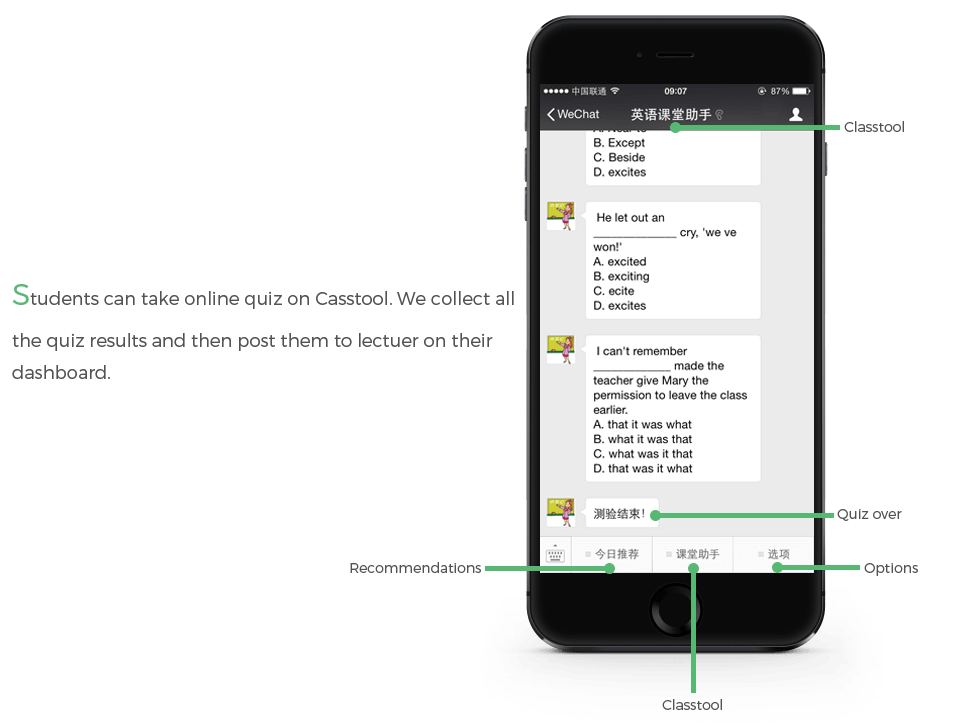
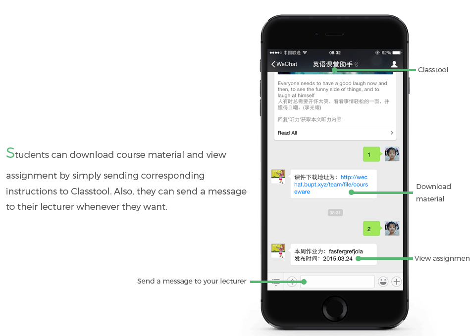
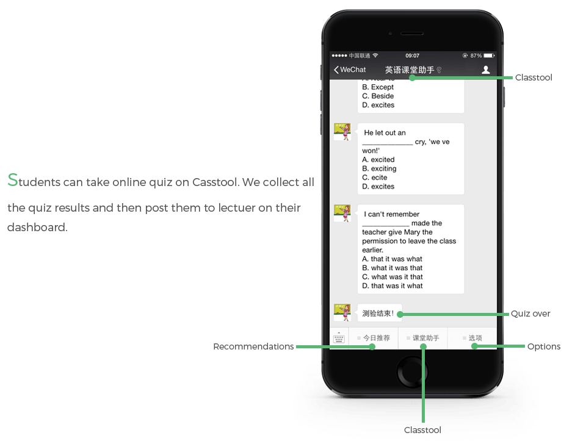
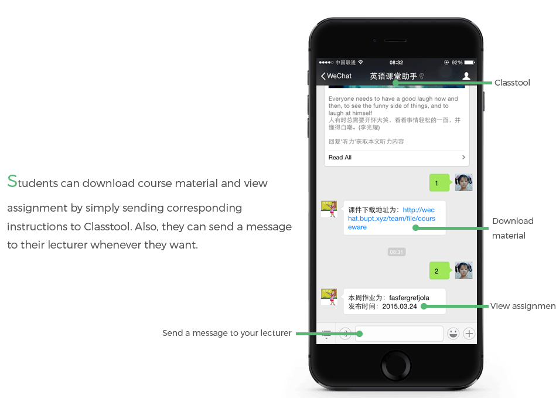

Field Research - Interview
To help us know more about what undergraduates’ and lecturers’ feeling for college English class, we interviewed 5 undergraduates and 3 lecturers.

Classtool is an expandable lecture support platform designed for college English class
It was awarded as Outstanding Project of College Student Research Program in Beijing.
April 2014 - April 2015
UX research
Web design
Interaction design
SQL
PHP
UX & UI desiger
back-end developer
Noticing that most undergraduates pay more attention to mobiles attending English class due to unvaried and boring teaching material and methods, we established a lecture support platform named “Classtool” based on the popular social media WeChat to add more dimensions to interaction and fun.
To help us know more about what undergraduates’ and lecturers’ feeling for college English class, we interviewed 5 undergraduates and 3 lecturers.
We invited users to help us improve our design: we discussed all the user scenarios and tried to discover every pain point. And we summarized our work in the customer journey map.
In the following develop process, I gradually discarded my developer-centered perspective and considered the users. Also, I iteratively proceeded to redesign the interaction flow in terms of user feedback. Eventually, we launched the platform and it was awarded Outstanding Project of College Student Research Program in Beijing.
My role is to use the API of Wechat to set up student client and main a back-end database.
To improve the performance of Classtool, I optimized the database: 1) Created Index, and rewrote SQL statements so that the search engine can maximize the use of Indexing Queries; 2) Optimized database structure, designed a certain number of associated tables and introduced some data redundancy to improve the response time of the system.

 


